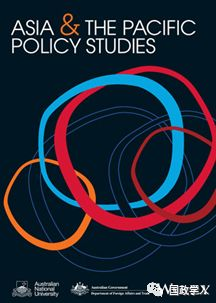
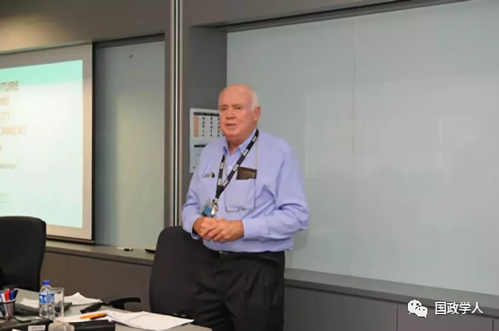

收录于合集

内容简介
【 作者 】Sam Bateman：澳大利亚伍伦贡大学国家海洋资源与安全中心(ANCORS)；新加坡南洋理工大学拉惹勒南国际关系学院（RSIS）(原新加坡 国防与战略研究所)，
【 邮箱 】sbateman@uow.edu.au
【 编译 】 晋 玉
【 审校 】刘孝玉、黄运涛
【 来源 】Sam Bateman，Building Cooperation for Managing the South ChinaSea Without Strategic Trust ，Asia & the Pacific Policy Studies, Vol. 4, No.2, pp. 251–259
【 期刊 】亚太政策研究（APPS）是由澳大利亚国立大学克劳福德公共政策学院主办的同行评审期刊，该刊主要对澳大利亚、亚太地区的政策进行研究，涉及经济学、政治学、治理、发展和环境多个领域。该期刊的创刊目的是打破学科障碍，产生政治影响。该刊现为社会科学引文索引（CSSCI）期刊（APPS官方网站）

内容提要
作者通过研究东南亚国家对南海仲裁案裁决的反应，认为中国在该地具有一定影响力且众东南亚国家只希望美国在该区域维持区域平衡，不希望美国有过激行为。作者通过研究判决结果认为虽然该判决的某些内容可能会煽动沿岸国对其专属经济区的民族情绪，增加争端复杂性，但其为重新管理南海提供了契机。作者分析认为对南海问题的现实主义思考方式、相关国家之间信任的缺失、相关国家对主权的过分重视及资金的缺乏是阻碍南海地区开展合作的重要原因。最后作者通过再次考察南海区域国家对开展合作所做出的努力给出了在战略互信缺失下开展南海管理合作的建议。

山姆·贝特曼（ Sam Bateman）
文章导读
引言
根据《联合国海洋法公约》(UNCLOS)设立的仲裁法庭于2016年7月做出了关于处理中国、菲律宾南海争端的最终裁决。然而该裁决出自于根据1982年UNCLOS附件七为解决争端而设立的仲裁庭，与海牙常设仲裁法院无关。该裁决确定了 “岛屿”、“岩礁”这两个海洋地物的区分标准，作者认为该标准所产生的影响超出了预期，但判决的影响并不会溯及既往，这意味着包括澳大利亚和日本在内的国家[1]不会改变自己的主张。从好的一面说，该判决为相关国家组织谈判、恢复合作奠定了基础。
** 2 地区反应**
作者分析了域外、域内国家对仲裁结果的反应。分析显示只有澳大利亚、加拿大、日本、新西兰、菲律宾、美国和越南这7个国家正式表明尊重裁决。除菲律宾和越南外，东南亚国家都作壁上观。越南是裁决的受益者，因仲裁结果对该国就其漫长海岸线所主张的专属经济区的主权和管辖权有利。在最初对裁决表示欢迎后，菲律宾总统与北京之间进行协商，探讨若干合作倡议。菲律宾对华外交政策的转变将有助于缓和区域紧张局势。尽管美、日施加压力希望该区域国家发表看法，但最近的区域论坛中并未提到该判决，这不仅暗示着中国在该地区的影响力，也表明虽然东南亚国家希望美国在该地区出现保持该地区平衡，但他们并不希望华盛顿采取更具挑战性的举措。
3.结果
通过否认中国九段线在UNCLOS中的法律基础，裁决否定中国对大部分南海海域的海洋权利主张，支持沿岸国对其专属经济区内的资源行使主权。作者认为仲裁庭对专属经济区管辖权的重视可能会强化沿岸国对其专属经济区的民族主义，而这种态度无益于在南海地区建立合作。
作者认为裁决判定南沙群岛中没有“完全权利”（full entitled）岛屿[2]令人感到惊讶。除非越南放弃对马来西亚和菲律宾专属经济区内地物的主张，否则若如裁决所言，再加上2009年越南和菲律宾的外大陆架主张，南海争端将会更加复杂。此外西沙和东沙群岛内的岛屿虽然是“完全权利”岛屿，但在中越主权争议仍旧存在的情况下，东、西沙内岛屿的海洋界限也难以划定。
作者表示南海周边国家并未认识到海洋边界并不是终点而只是有效管理海洋空间的一种方法。相比海洋边界本身，有效的海洋管理才是沿海国家的基础目标。这也是作为UNCLOS成员应该履行的义务（具体规定于UNCLOS 123条[3]）。此外，南海地区合作必要性来自于航运的增加、海洋生物资源(包括生物和非生物)的压力、环境退化以及避免“公地悲剧”的需求等因素。然而通过有效管理海洋实现可持续发展的目标由于缺乏信任尚未实现，而仲裁案为重新进行南海管理提供了契机，有关国家间应该把握机会进行协商，在海洋科学研究、渔业管理、保护海洋环境、海事执法以及搜索和救援等活动上开展功能性合作。
4.障碍与合作
横亘于南海周边国家开展合作的障碍如下：
第一、有关南海的评论都从国际关系理论中的现实主义出发，认为各国只以自己国家利益为标准行事，否认了通过合作实现“双赢”结果的可能性。相反，国际关系中的自由思维允许各国分享一些共同利益的概念，并避免出现“公地悲剧”；简而言之，现实主义的做法阻碍了合作，而自由主义的做法则鼓励合作。
第二、缺乏信任。如反海盗、人道主义援助和救灾等形式的合作是成功的，但这些活动涉及到区域国家的共同利益，不需要去识别对方是否是竞争者。通过在海上搜救、渔业管理、海上科学调查、海洋环境保护等低敏感领域（softer）合作建立互信是一个有效方法，然而开展此类合作也必须建立在有战略互信的基础上，而挑衅行为和言论正是增加不信任、阻止合作的原因。此外把海洋合作政治化，使其成为非传统安全领域的事项也会导致信任缺失，导致合作失败，所以政治应该被排除在科学之外。
第三、由于沿海国家对独立和主权的（过分）重视，其较容易认为合作意味着对主权让步，合作框架内的大国会处于支配地位，由此阻碍合作开展。所以合作倡议应基于合作不影响主权要求的谅解。
第四、合作还可能涉及超出独立管理海洋利益所需的成本。协调自身利益和其他各方利益方面会花费大量时间和精力，各国将会考虑合作产生的“收支”问题。如果收益小于支出，那么他们就不会选择合作。
5.推动合作
区域国家采取一些行动以促进南海合作交流，但均由于上述各种障碍，未能取得进展。
印度尼西亚举办的关于管理南海潜在冲突的系列非正式研讨会及其框架下达成的合作倡议，由于资金缺乏难以推进。中国成立的东盟-中国海事合作基金和南海中国- 东南亚研究中心
也由于该地区国家对中国的动机缺乏信任，并未能取得进展。 “科学合作并无益于不信任感的减低，共同利益也如此“ 。
《海洋法公约》第123(d)款[4]规定，为南海的有效管理提供了一个新的途径，然而除联合国环境规划署，该地区几乎没有要求过其他国家或组织加盟该地区的合作。作者认为其实如澳大利亚、日本和美国等国家由于其所具有的广泛海洋利益及丰富专业知识其给南海地区带来的可能不全是坏处。
中国和东盟之间可能就南海问题达成共识，通过对南中国海的管理采取“双轨”方式，使东盟能够重新专注于更密切的区域合作。
作者认为合作管理制度是管理南海及其海上活动的唯一手段。而合作管理制度只有在周边国家转变主权观念、资源独享观念和建立海上防线观念的前提下才能实现。
6.前路
如何促进合作以缓解南海紧张局势？这主要需要加强信任和提高区域海洋事务管控效率。把非传统安全问题的基本民事海事合作和更传统的映射于主权争端和COC规则中安全关切一概而论是导致互不信任的根本原因，只有把两者分而论之才能推进合作。民事海上合作包含着那些即有义务性又有必要性去展开的合作形势，只有民事海上合作去政治化才能在缺乏政治互信的情况下开展合作。
信任又有不同层次的区分。战略上的不信任是最严重的问题，而行动互信（operational distrust）也会限制了处理海洋污染、海上搜救和渔业等问题所需的合作。在缺乏战略互信的情况下有建立行动互信（operational distrust）的可能性，即在低敏感度（softer）问题开展的合作活动，即使在缺乏战略信任的情况下也可以帮助建立业务信任。
7. 政策启发
应该为中国和东盟提供空间让他们在没有域外国家压力和挑衅的情况下解决它们的分歧并探讨如何合作管理南海。启发如下：
-
在SOM基础上建立论坛，管理南海的海洋合作。
-
谈判应以海洋科学研究、海洋科学研究，渔业管理，海洋环境保护，海洋执法和海洋搜救等功能性合作为重点。
-
合作倡议应基于一项明确的谅解，即合作不影响主权要求。
-
区域论坛应继续促进打击海盗、人道援助及灾难救助及其演习。
-
如海洋科学专家，海洋环境专家和渔业管理者的认知共同体应享有在不受政治干预，自由开展业务。
-
南海域内国家应邀请其他感兴趣的国家和国际组织参与，借鉴南海及南海海洋活动的专业管理知识。
-
建立东盟-中国海岸警卫队论坛促进南海的行动互信。
[1]编者注：这些国家都就以上地物主张了专属经济区（EEZs）
[2]编者注：UNCLOS第八部分，第一二一条岛屿制度有关于岛屿和岩礁的相关规定。原文如下
1. 岛屿是四面环水并在高潮时高于水面的自然形成的陆地区域。
2. 除第3款另有规定外，岛屿的领海、毗连区、专属经济区和大陆架应按照本公约适用于其他陆地领土的规定加以确定。
3. 不能维持人类居住或其本身的经济生活的岩礁，不应有专属经济区或大陆架。
其中普遍把满足该条规定的岛屿称为“fully entitled”，因为其可主张如其他陆地一样的领海、毗连区、专属经济区和大陆架。
[3]编者注：第一二三条 闭海或半闭海沿岸国的合作
闭海或半闭海沿岸国在行使和履行本公约所规定的权利和义务时，应互相合作。为此目的，这些国家应尽力直接或通过适当区域组织:
(a) 协调海洋生物资源的管理、养护、勘探和开发;
(b) 协调行使和履行其在保护和保全海洋环境方面的权利和义务;
(c) 协调其科学研究政策，并在适当情形下在该地区进行联合的科学研究方案;
(d) 在适当情形下，邀请其他有关国家或国际组织与其合作以推行本条的规定。
[4]见注释3
** 扫描下方小程序码查看原文p df**
本文由国政学人微信公众平台编译首发
更多阅读
【地区秩序】阿米塔夫·阿查亚：权力转移还是范式变化？中国崛起与亚洲新兴安全秩序 | 国政学人
国政学人 （ID：guozhengxueren)
为方便学人及时阅读高质量文章
别忘把国政学人设置 星标 哦~